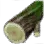
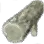
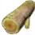

+
Bloody Tree Knot
🔗
+
How to Get
+
Gathering
🔗
Acacia Trees
Ash Trees
Birch Trees
Cactus Trees
Cedar Trees
Date Palm Trees
Elder Trees
Fir Trees
Loopy Trees
Maple Trees
 Moss Trees
 Palm Trees
Pine Trees
Thuja Trees
 White Cedar Trees
+
Nodes
🔗
Elric Shrine - Lumbering
Cheapest Route To: Tarif (10CP)
(1CP) Soldier's Grave
(1CP) Castle Ruins
(2CP) Kamasylve Temple
(1CP) Ancient Ruins Excavation Site
(1CP) Canyon of Corruption
(1CP) Elric Shrine
(3CP) Elric Shrine - Lumbering
Stonetail Wasteland - Lumbering
Cheapest Route To: Altinova (10CP)
(1CP) Altinova Entrance
(1CP) Stonebeak Shore
(2CP) Omar Lava Cave
(1CP) Mediah Shore
(1CP) Kusha
(1CP) Stonetail Wasteland
(3CP) Stonetail Wasteland - Lumbering
Cheapest Route To: Tarif (10CP)
(1CP) Soldier's Grave
(1CP) Castle Ruins
(2CP) Kamasylve Temple
(1CP) Ancient Ruins Excavation Site
(1CP) Canyon of Corruption
(1CP) Stonetail Wasteland
(3CP) Stonetail Wasteland - Lumbering
Treant Forest - Lumbering
Cheapest Route To: Trent (6CP)
(1CP) Lumberjack's Rest Area
(3CP) Abandoned Monastery
(1CP) Treant Forest
(1CP) Treant Forest - Lumbering
+
Used In Recipe
+
Alchemy
🔗
Elixir of Sky
2
Oil of the Abyss
2
Oil of Tranquility
1
Perfume of Courage
6
Plywood Hardener
3
Sinner's Blood
1
And More...
+
Notes
-Notes
 Elric Shrine - Lumbering
Stonetail Wasteland - Lumbering
Treant Forest - Lumbering
Elric Shrine - Lumbering
Stonetail Wasteland - Lumbering
Treant Forest - Lumbering